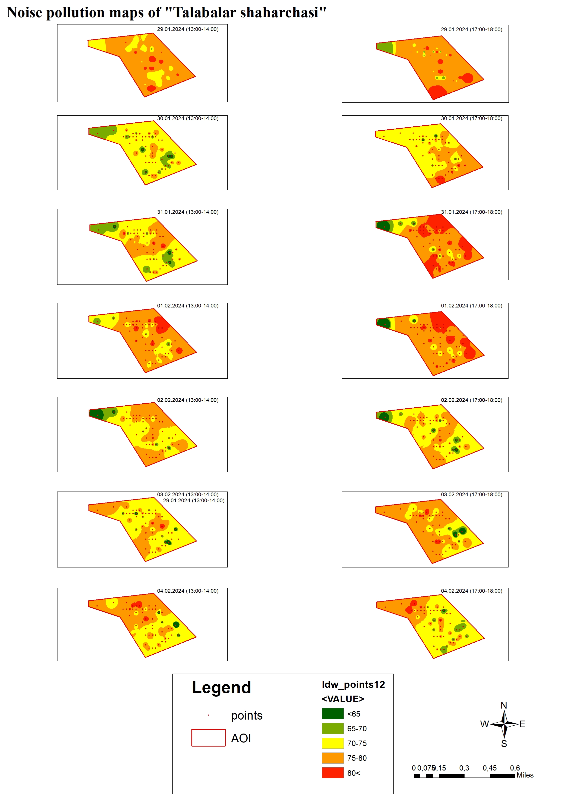
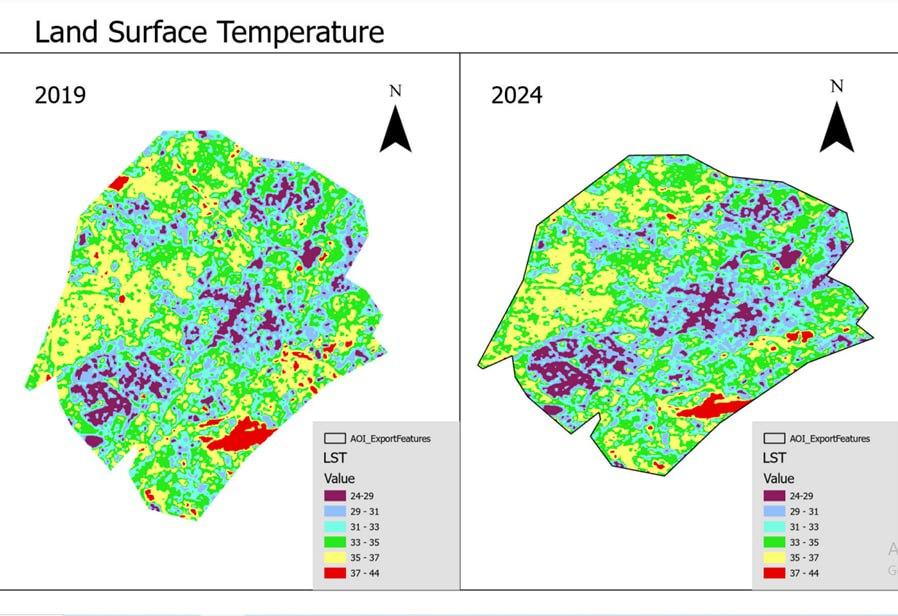
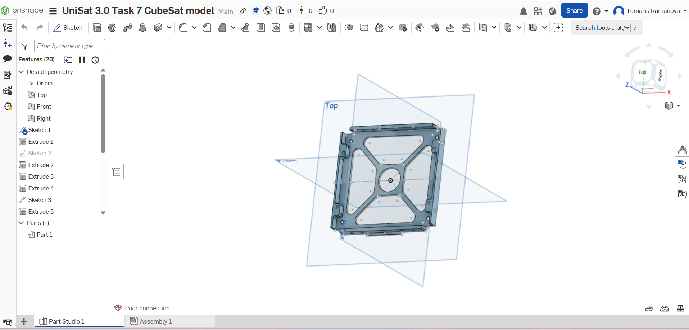

About me
I hold a bachelor's degree in Geodesy, Cartography, and Cadastre from the National University of Uzbekistan.
During my studies, I explored geospatial technologies through international exchange programs — at the Paris Lodron University of Salzburg (Austria) under the Erasmus+ ICM program, and the Pavel Jozef Šafárik University in Košice (Slovakia) under the National Scholarship Programme (NSP).
These experiences deepened my passion for remote sensing, GIS, and space technology.
Experience
Uzspace Agency
Intern
- Worked on evapotranspiration analysis and space monitoring using ArcGIS Pro.
- Gained hands-on experience with satellite image processing and geospatial data analytics.
Rahmonov Partners Consulting
GIS Specialist
- Worked on the Suenli Project, integrating settlement and water supply data into GIS systems.
- Supported infrastructure and spatial data visualization for project reports.
Skills
- ArcGIS Pro
- QGIS
- Python
- Onshape
- TinkerCAD
- CorelDraw
- Canva
- MS Office
Soft Skills: Analytical thinking, problem-solving, attention to detail, teamwork
Languages: Uzbek, Russian, English, Karakalpak
Projects
Noise Pollution Mapping – Talabalar Shaharchasi
Created detailed GIS maps to visualize noise pollution levels across Talabalar Shaharchasi. Collected spatial data, analyzed patterns of high and low noise zones, and produced clear visualizations to support urban planning and environmental monitoring.
Technologies: ArcGIS Pro, Excel
Role: Data collection, spatial analysis, cartographic design
Land Surface Temperature Analysis – Tashkent
Analyzed and mapped land surface temperature (LST) changes in Tashkent between 2019 and 2024 using Landsat data. Identified urban heat islands, trends, and temperature variations across different districts.
Technologies: ArcGIS Pro, Landsat 8/9
Outcome: Insights for urban climate monitoring and sustainable planning
CubeSat 3D Model
Designed a detailed 3D model of a CubeSat, including structural and internal components, as part of a space systems project in UniSat 3.
Technologies: Onshape CAD
Outcome: Accurate 3D model used for academic presentation and prototyping
🔗 View 3D ModelActivities & Volunteering
- Volunteer, GDG DevFest 2024 — supported event organization and logistics.
- Volunteer, "World With You" Project — youth and community outreach initiatives.
- Participant, UniSat 3 — learned about CubeSats, space systems, and 3D satellite modeling.